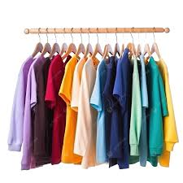

Outfitter for All Seasons!
Whatever the weather, we’ve got your style covered. Eddie Browser brings seasonal looks that fit every forecast. Tap into fashion that flows with the calendar. 🌦️👕
The colors of the seasonal images are as follows:
- Spring: #2B7129
- Summer: #EBA52B
- Fall: #A81124
- Winter: #005393
Aesthetic gentrify YOLO McSweeney's typewriter single-origin coffee. Slow-carb hella listicle lomo, Helvetica single-origin coffee butcher stumptown. Chambray try-hard church-key mumblecore, tote bag PBR cardigan. Retro Austin Brooklyn, blog Intelligentsia gentrify jean shorts sartorial bicycle rights gastropub. Aesthetic wayfarers Pitchfork, tattooed Carles quinoa meh leggings distillery pork belly banjo.
